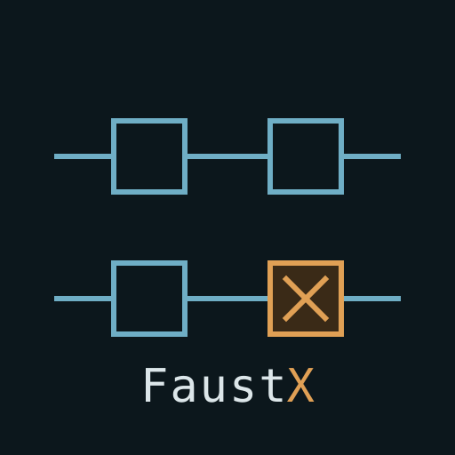

A : B
in series
decorated

FaustX · a superset of Faust · MIT
In Faust, a name is a macro: it is replaced by its body
at evaluation, so writing lpf twice builds two filters. Measured on Faust 2.70.3 —
one use gives 18 memory fields, two uses give 36.
Separate state is therefore free. What is missing is the address: no Faust expression can point at an instance that already exists. That is what stops you writing, an hour into a set, that filter, the one currently ringing — open it up.
FaustX gives that address, and nothing else. It computes nothing: a FaustX program is translated into Faust, and Faust compiles it.
Faust composes circuits with five signs. Of the five, two get decorated, one stays as it is, and two vanish from everyday writing — because naming an instance makes splitting and merging automatic.
Decorate Faust's own signs; do not invent new ones. The : stays
the connection, and what surrounds it qualifies it. Everything below follows from three rules,
and there is nothing else to remember.
| ! in front | cancels what it precedes — !: !~ !let ! lpf1 |
| a digit after | says how many — :8 ~8 lpfs:8 |
| the dot | reaches into an instance — lpf1.cutoff saw1.3 |
Spacing is significant. Tight, a sign qualifies;
spaced, it connects. Without that rule four writings would be ambiguous: :8 is a
width, : 8 connects to the constant 8; fc:800 assigns,
a : b connects.
let lpf1 fi.lowpass(fc:800) // place one instance, named
saw1 : lpf1 : process // wire it to what sounds
lpf1 fi.lowpass(fc:400) // replace its body — its memory stays
lpf1.fc:400 // or just turn the knob
!let lpf1 // give the name back, the tail runs outThe outputs on the left must be exactly as many as the inputs on the right. A mismatch is not recovered from: it stops the compilation.
// verified by compiling
_ : _ → passes
_ : (_,_) → ERROR : sequential composition A:BConnecting and disconnecting while the sound plays, and working at eight voices without rewriting both sides. Faust can do both — but only by rewriting the whole circuit.
: stays the connection; the digit
qualifies it.saw1 :8 lpf1 // connect as eight copies
saw1 !: lpf1 // cut the wireAnd the bare : stops refusing — it adapts, like a polyphonic
cable in VCV Rack.
| what arrives | what FaustX does |
|---|---|
| one channel into several | it spreads over all of them |
| several into an instance's input | they sum — nothing goes silent |
| several into a named port | the first is taken |
That distinction is VCV Rack's, to the letter — its
voltage standards prescribe summing on an audio input and taking the first channel on a
modulation input. And our notation already carries it: saw8 : lpf1 targets the
instance's input, lfo8 : lpf1.cutoff targets a port.
It costs Faust nothing: since we translate, FaustX emits the
<:, the :> or the bus that fits the widths it sees. The compiler
receives widths that add up and never knows an adaptation happened.
Nothing: A , B stacks two circuits that ignore each other. One's inputs follow
the other's, and likewise for the outputs.
⚠️ The comma is not the studio's "parallel", and Faust's documentation —
which calls it parallel composition — invites the confusion. Measured:
A , B has 2 inputs and 2 outputs, where the musician's parallel,
A <: (X,Y) :> B, has one of each.
Adding a voice while it plays, without touching what already sounds.
Not at all — and that is a result. What stacking is for, live, is already covered by a rule about placement: in a file, a line describes the circuit; sent on its own while the sound plays, it adds to it.
The inputs on the right must be a multiple of the outputs on the left. Otherwise, refusal at compile time.
_ <: (_,_,_,_) → passes (1 into 4)
(_,_) <: (_,_,_) → ERROR : split composition A<:BSending one source to two places — and above all adding a third destination an hour later without rebuilding the circuit.
saw1 names an instance
rather than a copy, wiring it a second time spreads it — with the split never written.Not at all: the sign becomes unnecessary in everyday writing. Naming an
instance turns the split into a consequence rather than a construction. <:
remains perfectly valid — it is Faust — but you no longer write it to patch.
This is the first place where the definition, settled first, pays somewhere other than at home.
The outputs on the left must be a multiple of the inputs on the right; signals that meet are added.
(_,_,_,_) :> _ → passes (4 into 1)
(_,_,_) :> (_,_) → ERROR : merge composition A:>BThe most ordinary gesture in a studio: sending several voices into the same effect, and adding one while the others are still ringing.
rev1 designating a single circuit.Not at all, for the same reason as the split. Several wires arriving at the same input sum — the rule of an effect send, and musically the right one: two voices sent into the same reverb resonate in the same space.
The gain is not only in writing. A reverb weighs 97 memory fields in the generated code; three copies would weigh 291, and their tails would never mix.
The output returns to the input with a one-sample delay placed automatically — that is what makes the loop computable. It is the construction that 645 of the library's functions depend on: every reverb, every compressor, 109 filters out of 114.
Opening and closing the loop while it sounds. The most spectacular gesture of a set — a delay starting to feed itself — and the only one that can run away.
! as everywhere else.dly1 !~ fb1 // open the loop
dly1 ~8 fb1 // feed back eight channelsThe same rule as everywhere: ! cancels, a digit says how many. Nothing new to
learn once the : is understood.
And the same musical rule as !let: opening a loop does not cut
the sound — what is circulating drains out.
| sign | what it does | in FaustX |
|---|---|---|
| : | in series | :8 how many · !: cut · and it adapts instead of refusing |
| , | stacked | unchanged — a line sent on its own already adds a branch |
| <: | split | implicit — an instance wired twice spreads |
| :> | merged | implicit — two wires into one input sum |
| ~ | fed back | !~ open · ~8 how many |
Faust's sign stays, and what surrounds it qualifies
it. A ! in front cancels — the connection, the loop, the binding. A digit
after says how many. Two decorations, learned once, valid everywhere: that is what separates a
rule from three clever finds.
The three pieces in the repository translate with nothing refused, and the Faust they produce compiles. 35 tests, a dozen of which invoke the real compiler. The catalogue declares the modules Faust's libraries declare, generated from their own documentation.
There is no sound here. FaustX emits Faust source; compiling it while the audio runs, and swapping an instance without dropping a sample, belongs to the host — that is where the measured 32 ms per instance matters, against 620 ms for a fifty-instance program — both taken through libfaust compiled to WebAssembly, which is what a browser host runs.